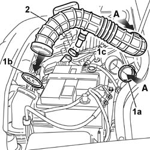
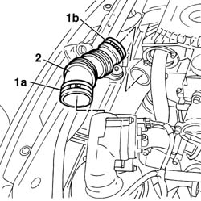

Procedures › 10 ENGINE › 1048 ENGINE AIR SUPPLY CIRCUIT › 1048A VACUUM AIR CIRCUIT › 1048A32 sleeve from air cleaner to intake manifold - r + r 1048A32 sleeve from air cleaner to intake manifold - r + r
Path Procedures > 10 ENGINE > 1048 ENGINE AIR SUPPLY CIRCUIT > 1048A VACUUM AIR CIRCUIT > 1048A32 sleeve from air cleaner to intake manifold - r + r
Kind repair procedure (removal / refitting; the operation number is the code)
Applies to engines: 1.6 16v, 1.9 DIESEL; all production periods
Interactive page https://sloeber94.github.io/elrnDB-fDbl/en/#/2584356
Applies to: engines: 1.6 16v; all production periods
Disconnect the battery negative terminal.
1. Disconnect band (1a) on the throttle body, band (1b) on the air cleaner case and band (1c) on the engine oil vapour recovery pipe.
2. Remove the sleeve from air cleaner to intake manifold.

Applies to: engines: 1.6 16v; all production periods
Fit the sleeve from air cleaner to intake manifold.
Secure the sleeve to the throttle body using a band.
Secure the sleeve to the air cleaner cover ussing a band.
Connect the oil vapour recovery pipe to the sleeve and secure using a band.
Connect the battery negative terminal.
Applies to: engines: 1.9 DIESEL; all production periods
1. Open filter air pipe band (1a) and tappet cover pipe band (1b) with air intake ports.
2. Remove the pipe connecting the air filter to the tappet cover with air intake ports.

Applies to: engines: 1.9 DIESEL; all production periods
Fit the pipe connecting the air filter to the tappet cover with air intake ports.
Connect the air filter and tappet cover pipe and secure it with the bands.
Close the bonnet lid.
Topics that link to this page (50) 1004B10 POWER UNIT WITH MANUAL GEARBOX - R.R repair procedure (removal / refitting; the operation number is the code) · all engines; all production periods 1004B12 power unit with manual gearbox - r+r for versions with a/c repair procedure (removal / refitting; the operation number is the code) · engines: 1.2 8v, 1.4 8v, 1.9 DIESEL; all production periods 1016B20 lh cylinder head extension - replace gasket repair procedure (removal / refitting; the operation number is the code) · all engines; all production periods 1016B22 lh cylinder head extension - r r with timing belt removed - replace gasket repair procedure (removal / refitting; the operation number is the code) · all engines; all production periods 1016B24 rh cylinder head extension - replace gasket repair procedure (removal / refitting; the operation number is the code) · all engines; all production periods 1016B26 rh cylinder head extension -r r with timing belt removed -replace gasket repair procedure (removal / refitting; the operation number is the code) · all engines; all production periods 1016C10 cylinder head - r + r and replace gasket repair procedure (removal / refitting; the operation number is the code) · all engines; all production periods 1020D12 front crank shaft oil seal cover - r + r and replace seals repair procedure (removal / refitting; the operation number is the code) · all engines; all production periods 1020D18 front crank shaft cover oil seal - replace repair procedure (removal / refitting; the operation number is the code) · all engines; all production periods 1020D26 flywheel side oil seal cover - r+r repair procedure (removal / refitting; the operation number is the code) · all engines; all production periods 1024B10 engine flywheel - r + r for versions with manual gearbox repair procedure (removal / refitting; the operation number is the code) · all engines; all production periods 1032B10 toothed timing belt - r + r for timing adjustment or replacement repair procedure (removal / refitting; the operation number is the code) · engines: 1.2 8v, 1.4 8v, 1.6 16v, 1.9 JTD 8V, 1.9 DIESEL; all production periods 1032B46 toothed drive pulley - r + r repair procedure (removal / refitting; the operation number is the code) · all engines; all production periods 1032B52 toothed driven pulley (one) - r + r repair procedure (removal / refitting; the operation number is the code) · all engines; all production periods 1032C18 mobile timing system tensioner - r + r for 24 valve engines repair procedure (removal / refitting; the operation number is the code) · all engines; all production periods 1032D34 timing system guard assemblies - r + r repair procedure (removal / refitting; the operation number is the code) · all engines; all production periods 1036G10 camshaft controlling exhaust valves in top head - r + r with top head removed - includes replacement of top head repair procedure (removal / refitting; the operation number is the code) · all engines; all production periods 1036G20 camshaft controlling intake valves in top head - r + r with top head removed - includes replacement of top head if necessary repair procedure (removal / refitting; the operation number is the code) · all engines; all production periods 1036G48 rear seal of camshaft of one l/h or r/h top head - r + r and replace seal repair procedure (removal / refitting; the operation number is the code) · all engines; all production periods 1058A90 cng injection wiring harness - arrange repair procedure (removal / refitting; the operation number is the code) · all engines; all production periods; only with equipment: BIPOWER 1056B15 throttle body intergral with mds - r r repair procedure (removal / refitting; the operation number is the code) · engines: 1.6 16v; all production periods 1056B50 coolant temperature sensor - r + r repair procedure (removal / refitting; the operation number is the code) · engines: 1.2 8v, 1.4 8v, 1.6 16v; all production periods 1056B60 single fuel manifold pipe, with injectors - r + r repair procedure (removal / refitting; the operation number is the code) · engines: 1.2 8v, 1.4 8v, 1.6 16v; all production periods 1056B61 single fuel manifold with injectors - r+r with air conveyor/box removed repair procedure (removal / refitting; the operation number is the code) · all engines; all production periods 1056B82 injection/ignition system e.c.u. (one) - r + r repair procedure (removal / refitting; the operation number is the code) · engines: 1.2 8v, 1.4 8v, 1.6 16v; all production periods 1056B90 system cable bundle - r + r repair procedure (removal / refitting; the operation number is the code) · engines: 1.4 8v, 1.6 16v; all production periods 1072B10 inlet manifold - r + r and replace seal repair procedure (removal / refitting; the operation number is the code) · all engines; all production periods 1072B14 inlet manifold - r+r and replace seal with air conveyor/box removed repair procedure (removal / refitting; the operation number is the code) · all engines; all production periods 1072B50 sleeves connecting air capacity box to inlet manifold is - r+r repair procedure (removal / refitting; the operation number is the code) · engines: 1.4 8v, 1.6 16v, 1.3 JTD 16V, 1.9 JTD 8V; all production periods 1080B95 rear lambda probe with catalitic converter r r repair procedure (removal / refitting; the operation number is the code) · engines: 1.2 8v, 1.4 8v, 1.6 16v; all production periods 1080B98 LAMBDA SENSORS (all) - R.R. repair procedure (removal / refitting; the operation number is the code) · engines: 1.6 16v; all production periods 1080C54 pipe carrying exhaust gas from e.g.r. valve to inlet manifold - r + r repair procedure (removal / refitting; the operation number is the code) · all engines; all production periods 1080D24 engine oil vapour intake pipe - r + r repair procedure (removal / refitting; the operation number is the code) · engines: 1.2 8v, 1.4 8v, 1.6 16v, 1.9 JTD 8V; all production periods 1080D26 idling engine oil vapour inlet line - r r repair procedure (removal / refitting; the operation number is the code) · all engines; all production periods 1084A22 engine oil filler - r r repair procedure (removal / refitting; the operation number is the code) · all engines; all production periods 1088B20 engine cooling radiator - r + r repair procedure (removal / refitting; the operation number is the code) · all engines; all production periods 1088C30 thermostat unit - r+r repair procedure (removal / refitting; the operation number is the code) · all engines; all production periods 1088D23 sleeve from thermostat to rigid pipe carrying fluid to pump - r r repair procedure (removal / refitting; the operation number is the code) · all engines; all production periods 1088E10 radiator cooling fan - r + r repair procedure (removal / refitting; the operation number is the code) · all engines; all production periods 1810A20 clutch - r + r repair procedure (removal / refitting; the operation number is the code) · all engines; all production periods 1820a24 THRUST BEARING LINKAGE - R + R repair procedure (removal / refitting; the operation number is the code) · engines: 1.2 8v, 1.3 JTD 16V, 1.9 DIESEL; all production periods 2110A10 manual gearbox and differential - r + r repair procedure (removal / refitting; the operation number is the code) · all engines; all production periods 5010A16 HEATER WATER RETURN PIPE - R.R. repair procedure (removal / refitting; the operation number is the code) · engines: 1.2 8v, 1.4 8v, 1.6 16v, 1.9 JTD 8V, 1.9 DIESEL; all production periods 5020A10 heater box - r+r repair procedure (removal / refitting; the operation number is the code) · all engines; all production periods 5020A50 heater radiator - r+r repair procedure (removal / refitting; the operation number is the code) · all engines; all production periods 5020B80 heater system wiring bundle - r r or replace repair procedure (removal / refitting; the operation number is the code) · all engines; all production periods 5040B22 air conditioning system de-mister thermostat - r+r repair procedure (removal / refitting; the operation number is the code) · all engines; all production periods 5040C10 air conditioner box - r+r repair procedure (removal / refitting; the operation number is the code) · all engines; all production periods 5040C50 air conditioner heater radiator - r+r repair procedure (removal / refitting; the operation number is the code) · all engines; all production periods 5040C64 a/c evaporator - r+r repair procedure (removal / refitting; the operation number is the code) · all engines; all production periods
 Removing
Removing Refitting
Refitting